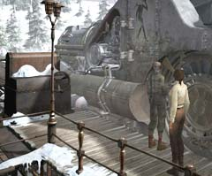
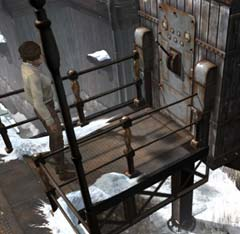

まず始めに
 ・まず、始めに何をすればいいだろうか? ・知ることはさほど難しくない。人に聞けばよい。 ・あとは、どうやればいいかを考えるだけだ。
エミリオフ大佐
・彼は何を知っているか? ・門が閉まって、移動できない理由を彼は知っているか? また、その解決方法は? ・石炭を入れられない理由を知っているか? ・見るからに、彼は店を経営している。何か便利なものは売っているか?
キャンディーマシーン
・どうやれば動かせるか? ・動かすにはコインが必要である。どこで入手するか? ・出てきたアメは何に使えばよいか? ・全部の機械を試す必要がある。
石炭の装置
 ・操作方法は分かるか? 誰が教えてくれるか? ・どうして動かないのか。下へ行って調べる必要がある。 ・ここから下を見ると、何が見えるか? 石炭の装置以外に何が見えるだろうか?
| 次へ >> |
|